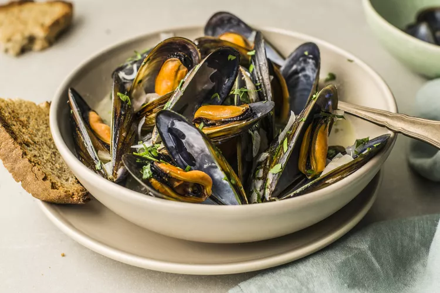

Mussels in White Wine

Description
Delicious Mussels cooked in white wine.
Ingredients
- 4lbs live mussels
- 6 tablespoons butter, cut into pieces
- 4 large shallots, finely chopped
- 4 garlic cloves, finely chopped
- 1⁄2 teaspoon salt
- 2 cups dry white wine
-
1⁄3 cup mixed fresh herbs (such as flat-leaf parsley, chervil, or basil,
chopped)
Steps
- Rinse and scrub mussels under cold water.
-
Using your fingers or paring knife, remove beards (strings that hang
from the mussel shells), and discard. Discard any broken mussels. If any
mussels are open and resist being closed, discard them.
-
In a large stockpot set over medium heat, melt the butter. Once it's
hot, add shallots, garlic, and salt.
- Add the wine and bring to a boil.
- Add mussels and cover.
- Steam until all mussels are open, about 5 minutes.
- Stir in herbs.
- Remove from heat.
- Divide mussels and broth among four bowls.
- Serve immediately.